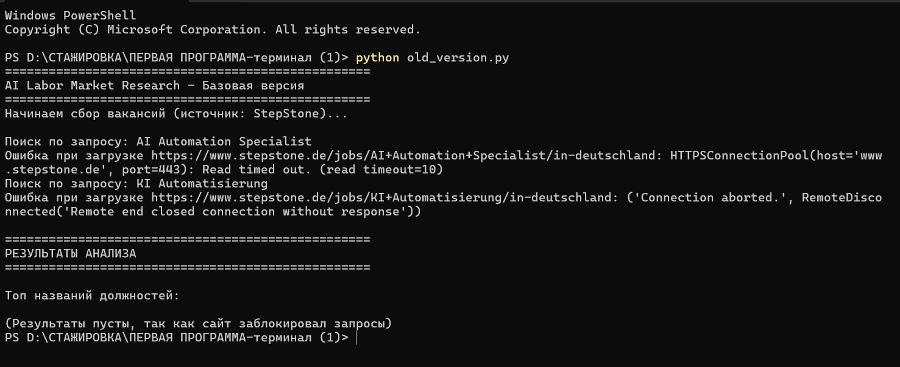
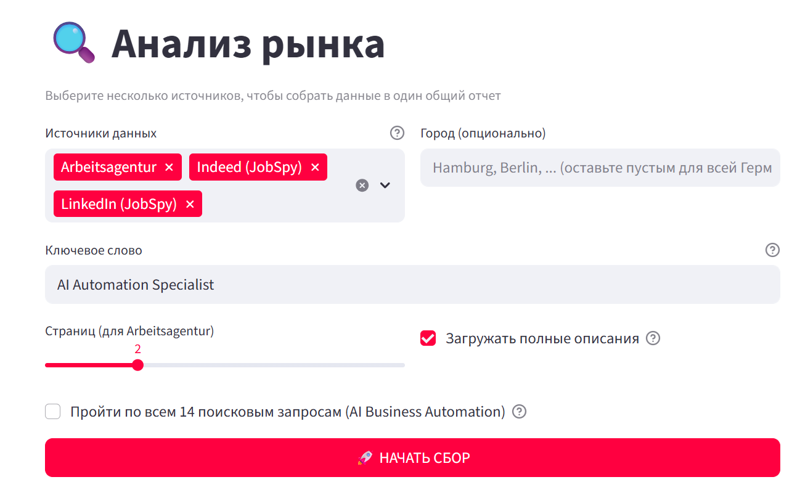
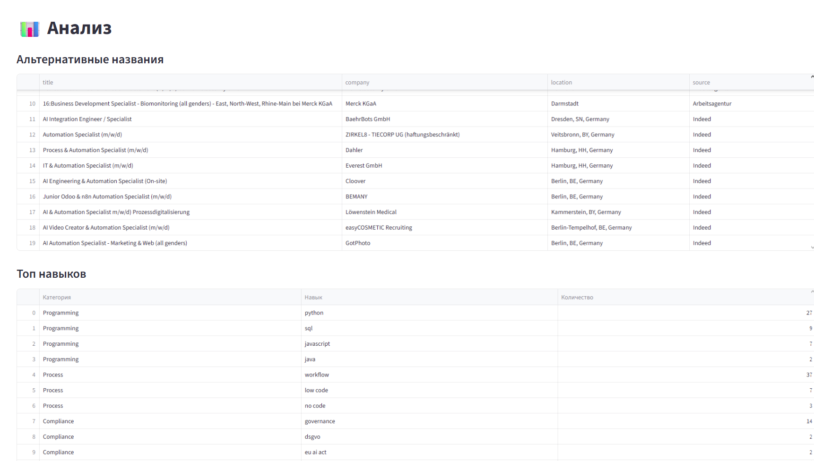
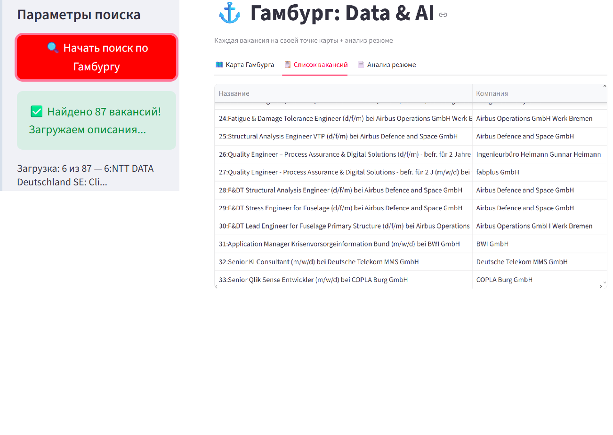
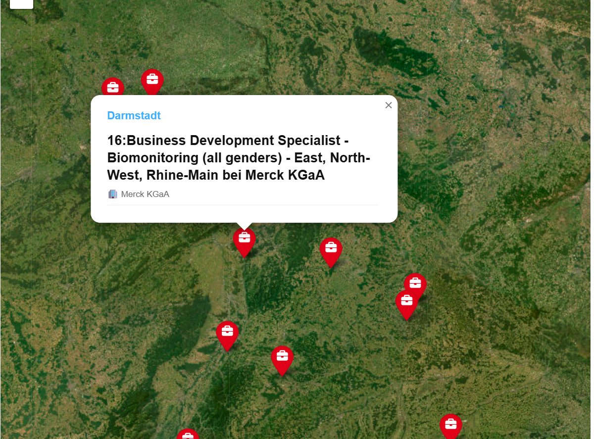
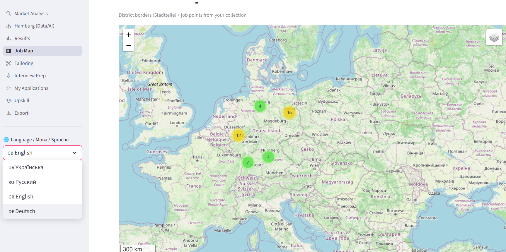
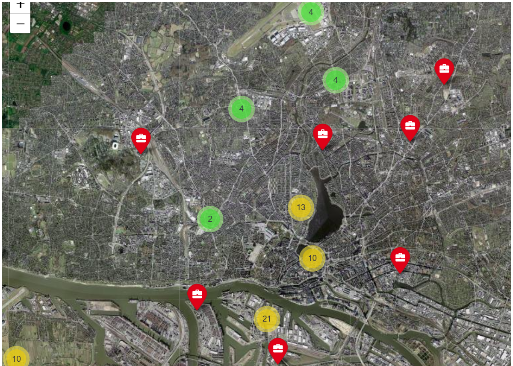

Исследование рынка труда в сфере AI Business Automation в ГерманииДослідження ринку праці у сфері AI Business Automation в НімеччиніResearch of the labor market in AI Business Automation in GermanyUntersuchung des Arbeitsmarktes für AI Business Automation in Deutschland
Что представляет собой программа?Що являє собою програма?What is the program?Was ist das Programm?
AILMR — это аналитический веб-инструмент, который автоматизирует поиск, фильтрацию и визуализацию вакансий на рынке труда Германии в одном интерфейсе.AILMR — це аналітичний веб-інструмент, який автоматизує пошук, фільтрацію та візуалізацію вакансій на ринку праці Німеччини в одному інтерфейсі.AILMR is an analytical web tool that automates the search, filtering, and visualization of job vacancies in the German labor market in a single interface.AILMR ist ein analytisches Web-Tool, das die Suche, Filterung und Visualisierung von Stellenangeboten auf dem deutschen Arbeitsmarkt in einer einzigen Oberfläche automatisiert.
🎯
Для соискателейДля шукачівFor job seekersFür JobsuchendeПоказывает, какие навыки чаще всего требуют работодатели.Показує, які навички найчастіше вимагають роботодавці.Shows which skills are most frequently required by employers.Zeigt, welche Fähigkeiten am häufigsten von Arbeitgebern gefordert werden.
📊
Для аналитиковДля аналітиківFor analystsFür AnalystenАгрегирует тысячи вакансий, удаляет дубликаты и строит наглядные графики.Агрегує тисячі вакансій, видаляє дублікати та будує наочні графіки.Aggregates thousands of vacancies, removes duplicates, and builds charts.Aggregiert Tausende von Stellen, entfernt Duplikate und erstellt Diagramme.
🧠
Глубокий анализГлибокий аналізDeep analysisTiefenanalyseАнализирует топ навыков (Python, RPA, n8n) и выявляет альтернативные названия должностей.Аналізує топ навичок (Python, RPA, n8n) та виявляє альтернативні назви посад.Analyzes top skills (Python, RPA, n8n) and identifies alternative job titles.Analysiert Top-Skills (Python, RPA, n8n) und identifiziert alternative Berufsbezeichnungen.
🏷️
Альтернативные названияАльтернативні назвиAlternative titlesAlternative TitelОпределяет, под какими названиями должностей встречаются инструменты.Визначає, під якими назвами посад зустрічаються інструменти.Determines under which job titles the tools appear.Bestimmt, unter welchen Berufsbezeichnungen die Tools vorkommen.
⚡
Экономия времениЕкономія часуTime savingZeitersparnisВместо ручного просмотра сайтов — готовый PDF-отчет.Замість ручного перегляду сайтів — готовий PDF-звіт.Instead of manually browsing sites — a ready-made PDF report.Anstatt Websites manuell zu durchsuchen — ein fertiger PDF-Bericht.
🌍
МультиязычностьБагатомовністьMultilingualMehrsprachigИнтерфейс на трех языках (RU / DE / EN).Інтерфейс на трьох мовах (RU / DE / EN).Interface in three languages (RU / DE / EN).Oberfläche in drei Sprachen (RU / DE / EN).
🗺️
ГеоаналитикаГеоаналітикаGeospatial analysisGeoanalyseВизуализирует географию вакансий на карте (включая специализированный модуль Гамбурга).Візуалізує географію вакансій на карті (включаючи спеціалізований модуль Гамбурга).Visualizes the geography of vacancies on a map (including the specialized Hamburg module).Visualisiert die Geografie der Stellenangebote auf einer Karte (einschließlich des spezialisierten Hamburg-Moduls).
📄
ЭкспортЕкспортExportExportПозволяет выгрузить все данные в CSV (для Excel) или сгенерировать готовый PDF-отчёт.Дозволяє вивантажити всі дані в CSV (для Excel) або згенерувати готовий PDF-звіт.Allows you to export all data to CSV (for Excel) or generate a ready-made PDF report.Ermöglicht den Export aller Daten in CSV (für Excel) oder die Erstellung eines fertigen PDF-Berichts.
Цель и задачи проектаМета та завдання проєктуProject goals and objectivesProjektziele und -aufgaben
Выяснить, под какими названиями работодатели ищут специалистов.З'ясувати, під якими назвами роботодавці шукають фахівців.Find out under what titles employers are looking for specialists.Finden Sie heraus, unter welchen Titeln Arbeitgeber nach Spezialisten suchen.
Найти альтернативные названия должностей, связанные с AI Business Automation.Знайти альтернативні назви посад, пов'язані з AI Business Automation.Find alternative job titles related to AI Business Automation.Finden Sie alternative Berufsbezeichnungen im Zusammenhang mit AI Business Automation.
Проанализировать количество вакансий по выявленным названиям.Проаналізувати кількість вакансій за виявленими назвами.Analyze the number of vacancies for the identified titles.Analysieren Sie die Anzahl der Stellenangebote für die identifizierten Titel.
Исследовать требования к кандидатам и востребованные навыки.Дослідити вимоги до кандидатів та затребувані навички.Research candidate requirements and in-demand skills.Untersuchen Sie die Anforderungen an Bewerber und die gefragten Fähigkeiten.
Выявить используемые инструменты и технологии для AI.Виявити використовувані інструменти та технології для AI.Identify the tools and technologies used for AI.Identifizieren Sie die verwendeten Tools und Technologien für KI.
Доп. задание: проранжировать названия вакансий по частоте встречаемости 19 конкретных AI-скиллов (n8n, Claude, API и др.).Дод. завдання: проранжувати назви вакансій за частотою зустрічальності 19 конкретних AI-скілів (n8n, Claude, API тощо).Additional task: rank job titles by the frequency of occurrence of 19 specific AI skills (n8n, Claude, API, etc.).Zusatzaufgabe: Ordnen Sie die Berufsbezeichnungen nach der Häufigkeit des Auftretens von 19 spezifischen KI-Skills (n8n, Claude, API usw.).
«Моей целью было создать не просто парсер, а полноценный аналитический инструмент».«Моєю метою було створити не просто парсер, а повноцінний аналітичний інструмент»."My goal was to create not just a parser, but a full-fledged analytical tool.""Mein Ziel war es, nicht nur einen Parser zu erstellen, sondern ein vollwertiges analytisches Tool."
Исходная задача и первый каркасПочаткове завдання та перший каркасInitial task and first frameworkAusgangsaufgabe und erstes Framework
Всё началось с необходимости исследовать немецкий рынок труда. Для решения этой задачи я написал первую версию программы на Python. Это был базовый консольный скрипт.Все почалося з необхідності дослідити німецький ринок праці. Для вирішення цього завдання я написав першу версію програми на Python. Це був базовий консольний скрипт.It all started with the need to research the German labor market. To solve this problem, I wrote the first version of the program in Python. It was a basic console script.Alles begann mit der Notwendigkeit, den deutschen Arbeitsmarkt zu untersuchen. Um dieses Problem zu lösen, schrieb ich die erste Version des Programms in Python. Es war ein einfaches Konsolenskript.

Проблема: Первая версия столкнулась с блокировкой Cloudflare (ошибка RemoteDisconnected). Сайт StepStone закрыл соединение, так как скрипт не мог обойти защиту от ботов.Проблема: Перша версія зіткнулася з блокуванням Cloudflare (помилка RemoteDisconnected). Сайт StepStone закрив з'єднання, оскільки скрипт не міг обійти захист від ботів.Problem: The first version encountered a Cloudflare block (RemoteDisconnected error). The StepStone website closed the connection because the script could not bypass the bot protection.Problem: Die erste Version stieß auf eine Cloudflare-Sperre (Fehler RemoteDisconnected). Die Website von StepStone schloss die Verbindung, da das Skript den Bot-Schutz nicht umgehen konnte.
Первая версия: базовый анализ рынкаПерша версія: базовий аналіз ринкуFirst version: basic market analysisErste Version: grundlegende Marktanalyse
После обхода блокировок, первая консольная версия успешно заработала. Она отправляла запросы к API и выдавала первичную аналитику: находила вакансии, считала их количество и извлекала названия компаний.Після обходу блокувань, перша консольна версія успішно запрацювала. Вона надсилала запити до API і видавала первинну аналітику: знаходила вакансії, рахувала їх кількість і витягувала назви компаній.After bypassing the blocks, the first console version worked successfully. It sent requests to the API and provided initial analytics: found vacancies, counted them, and extracted company names.Nach der Umgehung der Sperren funktionierte die erste Konsolenversion erfolgreich. Sie sendete Anfragen an die API und lieferte erste Analysen: fand Stellenangebote, zählte sie und extrahierte Firmennamen.
AI Labor Market Research - Base ==================================================
Начинаем сбор вакансий (источник: Arbeitsagentur)...Починаємо збір вакансій (джерело: Arbeitsagentur)...Starting job collection (source: Arbeitsagentur)...Beginne mit der Stellensammlung (Quelle: Arbeitsagentur)...
Поиск / Search / Suche: AI Automation Specialist
Найдено / Found / Gefunden: 24
Поиск / Search / Suche: KI Automatisierung
Найдено / Found / Gefunden: 25
==================================================
РЕЗУЛЬТАТЫ / RESULTS / ERGEBNISSE
==================================================
Топ названий должностей / Top job titles / Top-Berufsbezeichnungen:
1: AI & Automation Specialist / AI Engineer bei HDI AG: 1
2: Automation & AI Specialist bei Nexperia Germany GmbH: 1
3: AI & Automation Specialist Prozessdigitalisierung bei WILAmed GmbH: 1
4: Junior Specialist Automation & AI bei TecTake GmbH: 1
5: Outbound Automation Specialist ? AI experienced bei Scopevisio AG: 1
6: AI Video Creator & Automation Specialist bei urari: 1
7: Marketing AI & Automation Specialist (d/m/w) - Lexware Office bei Haufe-Lexware GmbH & Co.KG: 1
8: Junior Finance Automation & Controlling Specialist bei Schwarzwaldmilch GmbH Freiburg: 1
9: IT & Automation Specialist im Insolvenz- & Unternehmensrecht bei Ghendler Ruvinskij Rechtsanwälte PartG mbB: 1
Сохранено в / Saved to / Gespeichert in: ai_automation_jobs.csv (49)
Результат: Программа нашла 49 актуальных вакансий по двум запросам и сохранила их в CSV-файл для дальнейшего анализа. Это стало отправной точкой для создания полноценной экосистемы AILMR.Результат: Програма знайшла 49 актуальних вакансій за двома запитами і зберегла їх у CSV-файл для подальшого аналізу. Це стало відправною точкою для створення повноцінної екосистеми AILMR.Result: The program found 49 current vacancies for two queries and saved them to a CSV file for further analysis. This was the starting point for creating a full-fledged AILMR ecosystem.Ergebnis: Das Programm fand 49 aktuelle Stellenangebote für zwei Abfragen und speicherte sie in einer CSV-Datei zur weiteren Analyse. Dies war der Ausgangspunkt für die Erstellung eines vollwertigen AILMR-Ökosystems.
Интерфейс: Настройка сбора данныхІнтерфейс: Налаштування збору данихInterface: Data collection setupSchnittstelle: Einrichtung der Datenerfassung
Пользователь может выбрать нужные источники (Arbeitsagentur, Indeed, LinkedIn), указать город и ключевые слова, а также включить проход по всем 14 запросам.Користувач може вибрати потрібні джерела (Arbeitsagentur, Indeed, LinkedIn), вказати місто та ключові слова, а також увімкнути прохід по всіх 14 запитах.The user can select the desired sources (Arbeitsagentur, Indeed, LinkedIn), specify the city and keywords, and enable passing through all 14 queries.Der Benutzer kann die gewünschten Quellen (Arbeitsagentur, Indeed, LinkedIn) auswählen, Stadt und Schlüsselwörter angeben und die Durchführung aller 14 Abfragen aktivieren.

Особенность:Особливість:Feature:Besonderheit:Гибкая настройка позволяет собирать как общую статистику по всей Германии, так и точечные данные для конкретного города (например, Гамбурга) с загрузкой полных описаний вакансий.Гнучке налаштування дозволяє збирати як загальну статистику по всій Німеччині, так і точкові дані для конкретного міста (наприклад, Гамбурга) із завантаженням повних описів вакансій.Flexible settings allow you to collect both general statistics for all of Germany and targeted data for a specific city (e.g., Hamburg) with the loading of full job descriptions.Die flexiblen Einstellungen ermöglichen es, sowohl allgemeine Statistiken für ganz Deutschland als auch gezielte Daten für eine bestimmte Stadt (z. B. Hamburg) mit dem Laden vollständiger Stellenbeschreibungen zu erfassen.
Основные направления анализаОсновні напрямки аналізуMain areas of analysisHauptanalysebereiche
Программа использует 14 запросов, выявляет альтернативные названия должностей и анализирует навыки по 8 категориям.Програма використовує 14 запитів, виявляє альтернативні назви посад і аналізує навички за 8 категоріями.The program uses 14 queries, identifies alternative job titles, and analyzes skills across 8 categories.Das Programm verwendet 14 Abfragen, identifiziert alternative Berufsbezeichnungen und analysiert Fähigkeiten in 8 Kategorien.

База из 14 предустановленных запросовБаза з 14 попередньо встановлених запитівDatabase of 14 pre-installed queriesDatenbank mit 14 vorinstallierten Abfragen
14 запросовзапитівqueriesAbfragen
1AI Automation Specialist
2KI Automatisierung
3Prozessautomatisierung KI
4AI Automation Engineer
5KI Prozessmanager
6Automation Specialist KI
7AI Business Automation
8AI Workflow Specialist
9Intelligent Automation
10Hyperautomation
11AI Agent Developer
12Low-Code Automation
13RPA KI
14Business Process Automation KI
Как появилась эта база:Як з'явилася ця база:How this database came about:Wie diese Datenbank entstanden ist:
Анализ рынка:Аналіз ринку:Market analysis:Marktanalyse:ручной просмотр топ-100 вакансий на LinkedIn и Indeed.ручний перегляд топ-100 вакансій на LinkedIn та Indeed.manual review of the top 100 vacancies on LinkedIn and Indeed.manuelle Überprüfung der Top-100-Stellenangebote auf LinkedIn und Indeed.
Лингвистика:Лінгвістика:Linguistics:Linguistik:выявление синонимов на английском (AI, Automation, Workflow) и немецком (KI, Automatisierung, Prozess) языках.виявлення синонімів англійською (AI, Automation, Workflow) та німецькою (KI, Automatisierung, Prozess) мовами.identifying synonyms in English (AI, Automation, Workflow) and German (KI, Automatisierung, Prozess).Identifizierung von Synonymen im Englischen (AI, Automation, Workflow) und Deutschen (KI, Automatisierung, Prozess).
Группировка:Групування:Grouping:Gruppierung:объединение в 14 уникальных запросов по уровню (Junior/Senior) и специфике (RPA, Low-Code, AI Agents).об'єднання в 14 унікальних запитів за рівнем (Junior/Senior) та специфікою (RPA, Low-Code, AI Agents).combining into 14 unique queries by level (Junior/Senior) and specifics (RPA, Low-Code, AI Agents).Zusammenfassung in 14 einzigartigen Abfragen nach Ebene (Junior/Senior) und Besonderheiten (RPA, Low-Code, AI Agents).
Гибкость системы:Гнучкість системи:System flexibility:Systemflexibilität:архитектура позволяет легко расширять базу запросов (от базовых Core Queries до продвинутых Extended Queries, включая конкретные инструменты вроде n8n).архітектура дозволяє легко розширювати базу запитів (від базових Core Queries до просунутих Extended Queries, включаючи конкретні інструменти на кшталт n8n).the architecture allows you to easily expand the query base (from basic Core Queries to advanced Extended Queries, including specific tools like n8n).Die Architektur ermöglicht es, die Abfragebasis einfach zu erweitern (von grundlegenden Core Queries bis zu erweiterten Extended Queries, einschließlich spezifischer Tools wie n8n).
Обработка данных и фильтрацияОбробка даних та фільтраціяData processing and filteringDatenverarbeitung und -filterung
Программа собирает данные из нескольких источников, объединяет их и отсеивает нерелевантные вакансии.Програма збирає дані з кількох джерел, об'єднує їх та відсіює нерелевантні вакансії.The program collects data from multiple sources, combines them, and filters out irrelevant vacancies.Das Programm sammelt Daten aus mehreren Quellen, kombiniert sie und filtert irrelevante Stellenangebote heraus.

Почему в итоговом списке меньше вакансий?Чому в підсумковому списку менше вакансій?Why are there fewer vacancies in the final list?Warum gibt es in der endgültigen Liste weniger Stellenangebote? Программа собирает все вакансии по запросам (например, 87 вакансий). Однако многие из них не относятся к AI. Алгоритм отфильтровывает нерелевантные вакансии.Програма збирає всі вакансії за запитами (наприклад, 87 вакансій). Однак багато з них не належать до AI. Алгоритм відфільтровує нерелевантні вакансії.The program collects all vacancies for queries (e.g., 87 vacancies). However, many of them are not related to AI. The algorithm filters out irrelevant vacancies.Das Programm sammelt alle Stellenangebote für Abfragen (z. B. 87 Stellenangebote). Viele davon beziehen sich jedoch nicht auf KI. Der Algorithmus filtert irrelevante Stellenangebote heraus.
Программа наносит вакансии на спутниковую карту. Благодаря кластеризации маркеры не сливаются в одно пятно.Програма наносить вакансії на супутникову карту. Завдяки кластеризації маркери не зливаються в одну пляму.The program plots vacancies on a satellite map. Thanks to clustering, markers do not merge into one spot.Das Programm trägt Stellenangebote auf einer Satellitenkarte ein. Dank der Clusterbildung verschmelzen die Marker nicht zu einem Fleck.

При клике на маркер открывается окно с названием должности, компанией и городом.При кліку на маркер відкривається вікно з назвою посади, компанією та містом.Clicking on a marker opens a window with the job title, company, and city.Durch Klicken auf einen Marker öffnet sich ein Fenster mit Berufsbezeichnung, Unternehmen und Stadt.
Интерфейс: Карта и МультиязычностьІнтерфейс: Карта та БагатомовністьInterface: Map and MultilingualismSchnittstelle: Karte und Mehrsprachigkeit
Навигация по модулям программы (Market Analysis, Hamburg, Results, Job Map) и мгновенное переключение языка интерфейса (RU / UA / EN / DE).Навігація по модулях програми (Market Analysis, Hamburg, Results, Job Map) та миттєве перемикання мови інтерфейсу (RU / UA / EN / DE).Navigation through the program modules (Market Analysis, Hamburg, Results, Job Map) and instant interface language switching (RU / UA / EN / DE).Navigation durch die Programmmodule (Market Analysis, Hamburg, Results, Job Map) und sofortige Umschaltung der Oberflächensprache (RU / UA / EN / DE).

Детализация:Деталізація:Details:Details:В левом меню доступны все этапы: от сбора данных до подготовки к интервью. Карта Германии отображает кластеры вакансий, а выпадающее меню позволяет перевести весь интерфейс на один клик.У лівому меню доступні всі етапи: від збору даних до підготовки до інтерв'ю. Карта Німеччини відображає кластери вакансій, а випадаюче меню дозволяє перекласти весь інтерфейс на один клік.The left menu provides access to all stages: from data collection to interview preparation. The map of Germany displays vacancy clusters, and the drop-down menu allows you to translate the entire interface in one click.Das linke Menü bietet Zugriff auf alle Phasen: von der Datenerfassung bis zur Interviewvorbereitung. Die Deutschlandkarte zeigt Stellencluster an, und das Dropdown-Menü ermöglicht die Übersetzung der gesamten Oberfläche mit einem Klick.
Отдельный модуль для детального анализа рынка в Гамбурге с возможностью загрузки резюме.Окремий модуль для детального аналізу ринку в Гамбурзі з можливістю завантаження резюме.A separate module for detailed market analysis in Hamburg with the ability to upload a resume.Ein separates Modul für die detaillierte Marktanalyse in Hamburg mit der Möglichkeit, einen Lebenslauf hochzuladen.

На карте Гамбурга видна плотность вакансий в разных районах. Программа также позволяет сравнить навыки из резюме с требованиями рынка.На карті Гамбурга видно щільність вакансій у різних районах. Програма також дозволяє порівняти навички з резюме з вимогами ринку.The Hamburg map shows the density of vacancies in different districts. The program also allows you to compare skills from your resume with market requirements.Auf der Hamburg-Karte ist die Dichte der Stellenangebote in verschiedenen Bezirken zu sehen. Das Programm ermöglicht es Ihnen auch, Fähigkeiten aus Ihrem Lebenslauf mit den Marktanforderungen zu vergleichen.
Разработана авторская анимация загрузки в стиле «Киберпанк» с падающими Hex-кодами.Розроблена авторська анімація завантаження в стилі «Кіберпанк» з падаючими Hex-кодами.An original loading animation in the "Cyberpunk" style with falling Hex codes has been developed.Es wurde eine originelle Ladeanimation im "Cyberpunk"-Stil mit fallenden Hex-Codes entwickelt.
LinkedIn (JobSpy): AI Automation Specialist
(3 иззofvon 3)
Эволюция интерфейса: от концепта к удобствуЕволюція інтерфейсу: від концепту до зручностіInterface evolution: from concept to convenienceEntwicklung der Benutzeroberfläche: vom Konzept zum Komfort
В презентации показан голубой неоновый концепт для контраста со слайдами. В самой программе используется классическая зеленая матрица — она комфортнее для глаз при длительной работе.У презентації показаний блакитний неоновий концепт для контрасту зі слайдами. У самій програмі використовується класична зелена матриця — вона комфортніша для очей при тривалій роботі.The presentation shows a blue neon concept for contrast with the slides. The program itself uses a classic green matrix — it is more comfortable for the eyes during long work.Die Präsentation zeigt ein blaues Neonkonzept für den Kontrast zu den Folien. Das Programm selbst verwendet eine klassische grüne Matrix – sie ist bei längerer Arbeit angenehmer für die Augen.
Что программа умеет сейчасЩо програма вміє заразWhat the program can do nowWas das Programm jetzt kann
На данный момент AILMR — это полноценный аналитический веб-инструмент, который:На даний момент AILMR — це повноцінний аналітичний веб-інструмент, який:Currently, AILMR is a full-fledged analytical web tool that:Derzeit ist AILMR ein vollwertiges analytisches Web-Tool, das:
Собирает данные с 3 источников (Arbeitsagentur, Indeed, LinkedIn), используя 14 запросов.Збирає дані з 3 джерел (Arbeitsagentur, Indeed, LinkedIn), використовуючи 14 запитів.Collects data from 3 sources (Arbeitsagentur, Indeed, LinkedIn) using 14 queries.Sammelt Daten aus 3 Quellen (Arbeitsagentur, Indeed, LinkedIn) mit 14 Abfragen.
🧹
ОчисткаОчищенняCleaningBereinigung
Объединяет данные из разных источников в один список и автоматически удаляет дубликаты.Об'єднує дані з різних джерел в один список і автоматично видаляє дублікати.Combines data from different sources into one list and automatically removes duplicates.Kombiniert Daten aus verschiedenen Quellen in einer Liste und entfernt automatisch Duplikate.
Автоматически извлекает названия компаний, города и зарплаты из текстов вакансий.Автоматично витягує назви компаній, міста та зарплати з текстів вакансій.Automatically extracts company names, cities, and salaries from job texts.Extrahiert automatisch Firmennamen, Städte und Gehälter aus den Stellentexten.
🧠
АнализАналізAnalysisAnalyse
Анализирует топ навыков (Python, RPA, n8n) и выявляет альтернативные названия должностей.Аналізує топ навичок (Python, RPA, n8n) та виявляє альтернативні назви посад.Analyzes top skills (Python, RPA, n8n) and identifies alternative job titles.Analysiert Top-Skills (Python, RPA, n8n) und identifiziert alternative Berufsbezeichnungen.
📊
СтатистикаСтатистикаStatisticsStatistik
Показывает наглядную статистику в виде удобных таблиц и графиков.Показує наочну статистику у вигляді зручних таблиць і графіків.Shows clear statistics in the form of convenient tables and charts.Zeigt übersichtliche Statistiken in Form von praktischen Tabellen und Diagrammen.
Визуализирует географию вакансий на карте (включая специализированный модуль Гамбурга).Візуалізує географію вакансій на карті (включаючи спеціалізований модуль Гамбурга).Visualizes the geography of vacancies on a map (including the specialized Hamburg module).Visualisiert die Geografie der Stellenangebote auf einer Karte (einschließlich des spezialisierten Hamburg-Moduls).
📄
ЭкспортЕкспортExportExport
Позволяет выгрузить все данные в CSV (для Excel) или сгенерировать готовый PDF-отчёт.Дозволяє вивантажити всі дані в CSV (для Excel) або згенерувати готовий PDF-звіт.Allows you to export all data to CSV (for Excel) or generate a ready-made PDF report.Ermöglicht den Export aller Daten in CSV (für Excel) oder die Erstellung eines fertigen PDF-Berichts.
Поддерживает три языка интерфейса (RU / DE / EN) с мгновенным переключением.Підтримує три мови інтерфейсу (RU / DE / EN) з миттєвим перемиканням.Supports three interface languages (RU / DE / EN) with instant switching.Unterstützt drei Oberflächensprachen (RU / DE / EN) mit sofortiger Umschaltung.
🎨
ИнтерфейсІнтерфейсInterfaceSchnittstelle
Обладает уникальным темным интерфейсом с кастомной анимацией в стиле «киберпанк».Володіє унікальним темним інтерфейсом з кастомною анімацією в стилі «кіберпанк».Features a unique dark interface with custom "cyberpunk" style animation.Verfügt über eine einzigartige dunkle Oberfläche mit einer benutzerdefinierten Animation im "Cyberpunk"-Stil.
Требовалось определить, под какими названиями вакансий встречаются конкретные скиллы, и проранжировать их.Потрібно було визначити, під якими назвами вакансій зустрічаються конкретні скіли, і проранжувати їх.It was required to determine under which job titles specific skills are found and rank them.Es war erforderlich, festzustellen, unter welchen Berufsbezeichnungen bestimmte Fähigkeiten zu finden sind, und sie zu ordnen.
Список анализируемых скиллов (19 инструментов):Список аналізованих скілів (19 інструментів):List of analyzed skills (19 tools):Liste der analysierten Fähigkeiten (19 Tools):
Решение:Рішення:Solution:Lösung:В программу внедрен модуль SkillTitleRanker, который использует регулярные выражения (Regex) для поиска этих 19 скиллов в текстах вакансий (DE + EN) и вычисляет их корреляцию с названиями должностей.У програму впроваджено модуль SkillTitleRanker, який використовує регулярні вирази (Regex) для пошуку цих 19 скілів у текстах вакансій (DE + EN) та обчислює їх кореляцію з назвами посад.The program includes the SkillTitleRanker module, which uses regular expressions (Regex) to find these 19 skills in job texts (DE + EN) and calculates their correlation with job titles.Das Programm enthält das Modul SkillTitleRanker, das reguläre Ausdrücke (Regex) verwendet, um diese 19 Fähigkeiten in Stellentexten (DE + EN) zu finden und ihre Korrelation mit Berufsbezeichnungen zu berechnen.
Анализ частоты: Топ скилловАналіз частоти: Топ скілівFrequency Analysis: Top SkillsHäufigkeitsanalyse: Top-Skills
Программа просканировала собранные вакансии и выявила наиболее востребованные инструменты. Ниже приведены реальные данные из сгенерированного PDF-отчета:Програма просканувала зібрані вакансії та виявила найбільш затребувані інструменти. Нижче наведено реальні дані зі згенерованого PDF-звіту:The program scanned the collected vacancies and identified the most in-demand tools. Below are real data from the generated PDF report:Das Programm hat die gesammelten Stellenangebote gescannt und die gefragtesten Tools identifiziert. Nachfolgend finden Sie echte Daten aus dem generierten PDF-Bericht:
Инсайт:Інсайт:Insight:Einblick:Большинство современных AI-вакансий требуют знания n8n для создания автоматизаций и Claude в качестве основной языковой модели. Инструменты вроде Hugging Face или Gemini в данной выборке не встречались.Більшість сучасних AI-вакансій вимагають знання n8n для створення автоматизацій та Claude як основної мовної моделі. Інструменти на кшталт Hugging Face або Gemini в цій вибірці не зустрічалися.Most modern AI vacancies require knowledge of n8n for creating automations and Claude as the main language model. Tools like Hugging Face or Gemini did not appear in this sample.Die meisten modernen KI-Stellenangebote erfordern Kenntnisse in n8n zur Erstellung von Automatisierungen und Claude als Hauptsprachmodell. Tools wie Hugging Face oder Gemini kamen in dieser Stichprobe nicht vor.
Наведите курсор на столбец, чтобы увидеть точное количество вакансий и упоминаний. Данные 1:1 из PDF-отчёта.Наведіть курсор на стовпець, щоб побачити точну кількість вакансій і згадок. Дані 1:1 з PDF-звіту.Hover over a bar to see the exact number of vacancies and mentions. Data 1:1 from the PDF report.Bewegen Sie den Mauszeiger über einen Balken, um die genaue Anzahl der Stellen und Erwähnungen zu sehen. Daten 1:1 aus dem PDF-Bericht.
Иерархия: скиллы по категориямІєрархія: скіли за категоріямиHierarchy: skills by categoryHierarchie: Fähigkeiten nach Kategorie
Sunburst-диаграмма показывает вложенность: категория → скилл → количество упоминаний. Кликните на сектор, чтобы приблизить.Sunburst-діаграма показує вкладеність: категорія → скіл → кількість згадок. Клікніть на сектор, щоб наблизити.The sunburst chart shows the nesting: category → skill → number of mentions. Click on a sector to zoom in.Das Sunburst-Diagramm zeigt die Verschachtelung: Kategorie → Fähigkeit → Anzahl der Erwähnungen. Klicken Sie auf einen Sektor, um zu zoomen.
Ранжирование альтернативных названийРанжування альтернативних назвRanking of alternative titlesRanking alternativer Titel
Названия вакансий были проранжированы на основе IDF-скора (редкие скиллы весят больше) и количества уникальных скиллов.Назви вакансій були проранжовані на основі IDF-скору (рідкісні скіли важать більше) та кількості унікальних скілів.Job titles were ranked based on the IDF score (rare skills weigh more) and the number of unique skills.Berufsbezeichnungen wurden basierend auf dem IDF-Score (seltene Fähigkeiten wiegen mehr) und der Anzahl einzigartiger Fähigkeiten eingestuft.
РангРангRankRang
Название (Пример)Назва (Приклад)Title (Example)Titel (Beispiel)
Вывод:Висновок:Conclusion:Fazit:Наиболее специфичные (редкие) скиллы сконцентрированы в названиях, содержащих маркетинг, веб-разработку или инженерию. Это позволяет работодателям точнее находить нужных специалистов узкого профиля.Найбільш специфічні (рідкісні) скіли сконцентровані в назвах, що містять маркетинг, веб-розробку або інженерію. Це дозволяє роботодавцям точніше знаходити потрібних фахівців вузького профілю.The most specific (rare) skills are concentrated in titles containing marketing, web development, or engineering. This allows employers to more accurately find the right narrow-profile specialists.Die spezifischsten (seltensten) Fähigkeiten konzentrieren sich auf Titel, die Marketing, Webentwicklung oder Engineering enthalten. Dadurch können Arbeitgeber die richtigen Spezialisten für Nischenprofile genauer finden.
Архитектура алгоритма анализа скилловАрхітектура алгоритму аналізу скілівSkill analysis algorithm architectureArchitektur des Skill-Analyse-Algorithmus
Очистка названий от немецких пометок (m/w/d) и лишних символов. Пример: "1:AI Specialist (m/w/d)" -> "ai specialist"Очищення назв від німецьких позначок (m/w/d) та зайвих символів. Приклад: "1:AI Specialist (m/w/d)" -> "ai specialist"Cleaning titles from German notes (m/w/d) and extra characters. Example: "1:AI Specialist (m/w/d)" -> "ai specialist"Bereinigung von Titeln von deutschen Hinweisen (m/w/d) und zusätzlichen Zeichen. Beispiel: "1:AI Specialist (m/w/d)" -> "ai specialist"
Проход по тексту вакансии с помощью Regex. Поддерживаются английские и немецкие варианты написания (DE + EN).Прохід по тексту вакансії за допомогою Regex. Підтримуються англійський та німецький варіанти написання (DE + EN).Passing through the job text using Regex. English and German spellings are supported (DE + EN).Durchlaufen des Stellentextes mit Regex. Englische und deutsche Schreibweisen werden unterstützt (DE + EN).
Редкие скиллы (например, ElevenLabs) получают больший вес, чем массовые (например, JSON). Это делает рейтинг точнее.Рідкісні скіли (наприклад, ElevenLabs) отримують більшу вагу, ніж масові (наприклад, JSON). Це робить рейтинг точнішим.Rare skills (e.g., ElevenLabs) get more weight than mass ones (e.g., JSON). This makes the ranking more accurate.Seltene Fähigkeiten (z. B. ElevenLabs) erhalten mehr Gewicht als Massenware (z. B. JSON). Dies macht das Ranking genauer.
4. Ранжирование4. Ранжування4. Ranking4. Ranking
Сортировка названий по сумме IDF-скоров и выгрузка результатов в удобные таблицы и PDF-отчеты.Сортування назв за сумою IDF-скорів і вивантаження результатів у зручні таблиці та PDF-звіти.Sorting titles by the sum of IDF scores and exporting the results to convenient tables and PDF reports.Sortieren von Titeln nach der Summe der IDF-Scores und Exportieren der Ergebnisse in praktische Tabellen und PDF-Berichte.
«Мы не просто ищем слова, мы оцениваем смысловую нагрузку каждого названия вакансии на основе уникальности требуемых инструментов».«Ми не просто шукаємо слова, ми оцінюємо смислове навантаження кожної назви вакансії на основі унікальності необхідних інструментів»."We don't just search for words, we evaluate the semantic load of each job title based on the uniqueness of the required tools.""Wir suchen nicht nur nach Wörtern, wir bewerten die semantische Belastung jeder Berufsbezeichnung basierend auf der Einzigartigkeit der erforderlichen Tools."
Технологический стек проектаТехнологічний стек проєктуProject Tech StackTechnologie-Stack des Projekts
Программа построена на Python с использованием современных библиотек для сбора, анализа и визуализации данных.Програма побудована на Python з використанням сучасних бібліотек для збору, аналізу та візуалізації даних.The program is built on Python using modern libraries for data collection, analysis, and visualization.Das Programm basiert auf Python und verwendet moderne Bibliotheken für Datenerfassung, -analyse und -visualisierung.
🐍
Python 3.11Основной язык программирования. Используется для всей логики приложения, парсинга и анализа данных.Основна мова програмування. Використовується для всієї логіки додатка, парсингу та аналізу даних.Main programming language. Used for all application logic, parsing, and data analysis.Hauptprogrammiersprache. Wird für die gesamte Anwendungslogik, das Parsen und die Datenanalyse verwendet.
🎈
StreamlitФреймворк для создания веб-интерфейса. Позволяет писать UI на чистом Python без HTML/CSS/JS.Фреймворк для створення веб-інтерфейсу. Дозволяє писати UI на чистому Python без HTML/CSS/JS.Framework for creating a web interface. Allows you to write UI in pure Python without HTML/CSS/JS.Framework zur Erstellung einer Weboberfläche. Ermöglicht das Schreiben von UI in reinem Python ohne HTML/CSS/JS.
🐼
PandasОбработка и анализ данных. Используется для очистки, фильтрации и агрегации собранных вакансий.Обробка та аналіз даних. Використовується для очищення, фільтрації та агрегації зібраних вакансій.Data processing and analysis. Used for cleaning, filtering, and aggregating collected vacancies.Datenverarbeitung und -analyse. Wird zum Bereinigen, Filtern und Aggregieren gesammelter Stellenangebote verwendet.
🕸️
BeautifulSoup & RequestsПарсинг HTML-страниц государственного портала Arbeitsagentur и извлечение информации о вакансиях.Парсинг HTML-сторінок державного порталу Arbeitsagentur та вилучення інформації про вакансії.Parsing HTML pages of the state portal Arbeitsagentur and extracting vacancy information.Parsen von HTML-Seiten des staatlichen Portals Arbeitsagentur und Extrahieren von Stelleninformationen.
💼
JobSpyБиблиотека для сбора вакансий с LinkedIn и Indeed. Обрабатывает авторизацию и защиту от ботов.Бібліотека для збору вакансій з LinkedIn та Indeed. Обробляє авторизацію та захист від ботів.Library for collecting vacancies from LinkedIn and Indeed. Handles authorization and bot protection.Bibliothek zum Sammeln von Stellenangeboten von LinkedIn und Indeed. Behandelt Autorisierung und Bot-Schutz.
🗺️
Folium & GeopyСоздание интерактивных карт (Германия и Гамбург) с кластеризацией и геокодированием адресов.Створення інтерактивних карт (Німеччина та Гамбург) з кластеризацією та геокодуванням адрес.Creating interactive maps (Germany and Hamburg) with clustering and address geocoding.Erstellung interaktiver Karten (Deutschland und Hamburg) mit Clustering und Adress-Geocoding.
📄
FPDF2Генерация PDF-отчетов с таблицами. Включает очистку текста от неподдерживаемых символов Unicode.Генерація PDF-звітів з таблицями. Включає очищення тексту від непідтримуваних символів Unicode.Generation of PDF reports with tables. Includes cleaning text from unsupported Unicode characters.Erstellung von PDF-Berichten mit Tabellen. Beinhaltet die Bereinigung von Text von nicht unterstützten Unicode-Zeichen.
📑
PyPDF2 & python-docxМодуль для чтения резюме (Lebenslauf) в форматах PDF и DOCX для анализа навыков кандидата.Модуль для читання резюме (Lebenslauf) у форматах PDF та DOCX для аналізу навичок кандидата.Module for reading resumes (Lebenslauf) in PDF and DOCX formats for analyzing candidate skills.Modul zum Lesen von Lebensläufen (Lebenslauf) in den Formaten PDF und DOCX zur Analyse der Fähigkeiten von Bewerbern.
«Все технологии подобраны так, чтобы обеспечить полный цикл: от сбора сырых данных до готового аналитического PDF-отчета и интерактивной карты».«Усі технології підібрані так, щоб забезпечити повний цикл: від збору сирих даних до готового аналітичного PDF-звіту та інтерактивної карти»."All technologies are selected to provide a full cycle: from collecting raw data to a ready-made analytical PDF report and an interactive map.""Alle Technologien sind so ausgewählt, dass sie einen vollständigen Zyklus ermöglichen: von der Sammlung von Rohdaten bis zum fertigen analytischen PDF-Bericht und einer interaktiven Karte."
За 9 дней число вакансий в сегменте AI/Automation в Германии выросло на 18,5%. Прирост ускоряется: +136 за первую неделю и ещё +72 за следующие два дня.За 9 днів кількість вакансій у сегменті AI/Automation в Німеччині зросла на 18,5%. Приріст прискорюється: +136 за перший тиждень і ще +72 за наступні два дні.In 9 days, the number of vacancies in the AI/Automation segment in Germany grew by 18.5%. The increase is accelerating: +136 in the first week and another +72 in the next two days.In 9 Tagen ist die Anzahl der Stellenangebote im Segment KI/Automatisierung in Deutschland um 18,5% gestiegen. Der Anstieg beschleunigt sich: +136 in der ersten Woche und weitere +72 in den nächsten zwei Tagen.
26.10.2026
1 126
вакансийвакансійvacanciesStellen
02.11.2026
1 262
вакансийвакансійvacanciesStellen
04.11.2026
1 334
вакансийвакансійvacanciesStellen
Прирост за 9 днейПриріст за 9 днівGrowth in 9 daysWachstum in 9 Tagen
Интерпретация:Інтерпретація:Interpretation:Interpretation:прирост замедлился (136 → 72 за два дня), но остаётся положительным. Рынок растёт, а не стагнирует. Для соискателей это означает сохраняющийся спрос и окно возможностей.приріст сповільнився (136 → 72 за два дні), але залишається позитивним. Ринок зростає, а не стагнує. Для шукачів це означає збережений попит і вікно можливостей.growth has slowed down (136 → 72 in two days) but remains positive. The market is growing, not stagnating. For job seekers, this means continued demand and a window of opportunity.Das Wachstum hat sich verlangsamt (136 → 72 in zwei Tagen), bleibt aber positiv. Der Markt wächst und stagniert nicht. Für Jobsuchende bedeutet dies eine anhaltende Nachfrage und ein Zeitfenster für Chancen.
Что изменилось: ядро рынка vs новые сдвигиЩо змінилося: ядро ринку vs нові зрушенняWhat has changed: market core vs new shiftsWas sich geändert hat: Marktkern vs. neue Verschiebungen
Структура спроса осталась прежней. За 9 дней усилились те же пять содержательных направлений — Agentic AI, инфраструктура, Low-Code, Quereinsteiger и Finance-AI.Структура попиту залишилася колишньою. За 9 днів посилилися ті ж п'ять змістовних напрямків — Agentic AI, інфраструктура, Low-Code, Quereinsteiger та Finance-AI.The demand structure remains the same. Over 9 days, the same five substantive directions intensified — Agentic AI, infrastructure, Low-Code, Quereinsteiger, and Finance-AI.Die Nachfragestruktur bleibt gleich. Über 9 Tage haben sich dieselben fünf inhaltlichen Richtungen verstärkt – Agentic AI, Infrastruktur, Low-Code, Quereinsteiger und Finance-AI.
Стабильное ядро:Стабільне ядро:Stable core:Stabiler Kern:AI & Automation Specialist, Prozessmanager, RPA/UiPath/n8n/Power Platform, крупные корпорации и консалтинг.AI & Automation Specialist, Prozessmanager, RPA/UiPath/n8n/Power Platform, великі корпорації та консалтинг.AI & Automation Specialist, Prozessmanager, RPA/UiPath/n8n/Power Platform, large corporations and consulting.AI & Automation Specialist, Prozessmanager, RPA/UiPath/n8n/Power Platform, Großkonzerne und Beratung.
Новые сдвиги:Нові зрушення:New shifts:Neue Verschiebungen:Agentic AI / LLM-роли, инфраструктура (MLOps, DevOps+AI), Low-Code, Quereinsteiger, Finance-AI.Agentic AI / LLM-ролі, інфраструктура (MLOps, DevOps+AI), Low-Code, Quereinsteiger, Finance-AI.Agentic AI / LLM roles, infrastructure (MLOps, DevOps+AI), Low-Code, Quereinsteiger, Finance-AI.Agentic AI / LLM-Rollen, Infrastruktur (MLOps, DevOps+AI), Low-Code, Quereinsteiger, Finance-AI.
Зарплатные сигналы: диапазоны по грейдамЗарплатні сигнали: діапазони за грейдамиSalary signals: ranges by gradeGehaltssignale: Bereiche nach Grad
Зарплаты указаны лишь в части вакансий, но диапазоны показательны: медиана — 55–65 тыс. € для специалиста с опытом 2–5 лет.Зарплати вказані лише в частині вакансій, але діапазони показові: медіана — 55–65 тис. € для фахівця з досвідом 2–5 років.Salaries are indicated only in some vacancies, but the ranges are indicative: the median is 55–65 thousand € for a specialist with 2–5 years of experience.Gehälter werden nur in einigen Stellenangeboten angegeben, aber die Bereiche sind bezeichnend: Der Median liegt bei 55–65 Tausend € für einen Spezialisten mit 2–5 Jahren Erfahrung.
Пять измерений показывают, что за 9 дней рынок стал больше, глубже и заметно более инженерным.П'ять вимірів показують, що за 9 днів ринок став більшим, глибшим і помітно більш інженерним.Five dimensions show that in 9 days the market has become larger, deeper, and noticeably more engineering-oriented.Fünf Dimensionen zeigen, dass der Markt in 9 Tagen größer, tiefer und deutlich technischer geworden ist.
📈
Рост, а не сжатиеЗростання, а не стисненняGrowth, not contractionWachstum, keine Schrumpfung+18,5% за 9 дней — устойчивый поток, а не шум.+18,5% за 9 днів — стійкий потік, а не шум.+18.5% in 9 days — a steady flow, not noise.+18,5% in 9 Tagen – ein stetiger Fluss, kein Rauschen.
🧱
Двухуровневый спросДворівневий попитTwo-tier demandZweistufige NachfrageМассовое внедрение vs инженерия AI-платформ.Масове впровадження vs інженерія AI-платформ.Mass adoption vs engineering of AI platforms.Masseneinführung vs. Engineering von KI-Plattformen.
🌍
Выход за пределы ITВихід за межі ITGoing beyond ITÜber IT hinausgehenФинансы, HR, логистика, страхование, госсектор.Фінанси, HR, логістика, страхування, держсектор.Finance, HR, logistics, insurance, public sector.Finanzen, HR, Logistik, Versicherungen, öffentlicher Sektor.
🧰
Консолидация стекаКонсолідація стекуStack consolidationStack-KonsolidierungUiPath, Power Platform, n8n, Make, Copilot Studio, SAP BTP.UiPath, Power Platform, n8n, Make, Copilot Studio, SAP BTP.UiPath, Power Platform, n8n, Make, Copilot Studio, SAP BTP.UiPath, Power Platform, n8n, Make, Copilot Studio, SAP BTP.
🚪
Дефицит кадровДефіцит кадрівStaff shortagePersonalmangelПоявление Quereinsteiger-вакансий снижает барьер входа.Поява Quereinsteiger-вакансій знижує бар'єр входу.The emergence of Quereinsteiger vacancies lowers the entry barrier.Das Aufkommen von Quereinsteiger-Stellen senkt die Eintrittsbarriere.
Эволюция: от парсера к личному AI-ассистентуЕволюція: від парсера до особистого AI-асистентаEvolution: from parser to personal AI assistantEvolution: vom Parser zum persönlichen KI-Assistenten
Изначально AILMR создавался как аналитический инструмент. Но в процессе работы стало ясно: соискателю нужна помощь не только в сборе данных, но и в прохождении всего пути до оффера. Так программа превратилась в полноценную экосистему.Спочатку AILMR створювався як аналітичний інструмент. Але в процесі роботи стало ясно: шукачеві потрібна допомога не лише у зборі даних, а й у проходженні всього шляху до оферу. Так програма перетворилася на повноцінну екосистему.Initially, AILMR was created as an analytical tool. But in the process, it became clear: a job seeker needs help not only in collecting data but also in going through the entire path to an offer. So the program turned into a full-fledged ecosystem.Ursprünglich wurde AILMR als analytisches Tool erstellt. Aber im Laufe der Arbeit wurde klar: Ein Jobsuchender braucht nicht nur Hilfe bei der Datenerfassung, sondern auch beim Durchlaufen des gesamten Weges zu einem Angebot. So wurde das Programm zu einem vollwertigen Ökosystem.
🔍
1. Research
Сбор вакансий с 4 источников, анализ трендов и востребованных навыков на рынке Германии.Збір вакансій з 4 джерел, аналіз трендів та затребуваних навичок на ринку Німеччини.Collecting vacancies from 4 sources, analyzing trends and in-demand skills in the German market.Sammlung von Stellenangeboten aus 4 Quellen, Analyse von Trends und gefragten Fähigkeiten auf dem deutschen Markt.
🎯
2. Assessment
Gap-анализ (сравнение CV с вакансией) и ATS-симулятор для проверки проходимости резюме.Gap-аналіз (порівняння CV з вакансією) та ATS-симулятор для перевірки прохідності резюме.Gap analysis (comparing CV with vacancy) and ATS simulator to check resume passability.Gap-Analyse (Vergleich des Lebenslaufs mit der Stelle) und ATS-Simulator zur Überprüfung der Passierbarkeit des Lebenslaufs.
🚀
3. Preparation
Генерация Anschreiben через локальный ИИ и тренировка интервью (Mock Interview) по методу STAR.Генерація Anschreiben через локальний AI та тренування інтерв'ю (Mock Interview) за методом STAR.Generating Anschreiben via local AI and interview training (Mock Interview) using the STAR method.Generierung von Anschreiben über lokale KI und Interview-Training (Mock Interview) nach der STAR-Methode.
«Программа выполняет полный цикл: находит вакансии, говорит, куда лучше подаваться, генерирует письмо и готовит к собеседованию».«Програма виконує повний цикл: знаходить вакансії, каже, куди краще подаватися, генерує лист і готує до співбесіди»."The program performs a full cycle: finds vacancies, tells where it is better to apply, generates a letter, and prepares for an interview.""Das Programm führt einen vollständigen Zyklus durch: Es findet Stellenangebote, sagt, wo man sich besser bewerben sollte, generiert ein Anschreiben und bereitet auf das Vorstellungsgespräch vor."
Новые возможности: ATS и Локальный ИИНові можливості: ATS та Локальний AINew features: ATS and Local AINeue Funktionen: ATS und lokale KI
🛡️
ATS-Simulator
В Германии многие крупные компании используют Applicant Tracking Systems (ATS). Программа анализирует ваш PDF так же, как это делает робот:У Німеччині багато великих компаній використовують Applicant Tracking Systems (ATS). Програма аналізує ваш PDF так само, як це робить робот:In Germany, many large companies use Applicant Tracking Systems (ATS). The program analyzes your PDF just like a robot does:In Deutschland nutzen viele große Unternehmen Applicant Tracking Systems (ATS). Das Programm analysiert Ihr PDF genau wie ein Roboter:
Оценка структуры (стандартные заголовки).Оцінка структури (стандартні заголовки).Structure evaluation (standard headings).Bewertung der Struktur (Standardüberschriften).
Keyword-матчинг с текстом вакансии.Keyword-матчинг з текстом вакансії.Keyword matching with the vacancy text.Keyword-Matching mit dem Stellentext.
🧠
Локальный ИИ (Ollama)Локальний AI (Ollama)Local AI (Ollama)Lokale KI (Ollama)
Генерация документов происходит на вашем компьютере без передачи данных в облака (OpenAI):Генерація документів відбувається на вашому комп'ютері без передачі даних у хмари (OpenAI):Document generation happens on your computer without transferring data to clouds (OpenAI):Die Dokumentenerstellung erfolgt auf Ihrem Computer ohne Datenübertragung in die Cloud (OpenAI):
Полная конфиденциальность ваших резюме.Повна конфіденційність ваших резюме.Complete privacy of your resumes.Vollständige Privatsphäre Ihrer Lebensläufe.
Нулевые затраты (нет подписок и лимитов).Нульові витрати (немає підписок та лімітів).Zero costs (no subscriptions or limits).Null Kosten (keine Abonnements oder Limits).
Умный Fallback: если одна модель зависла, включается резервная.Розумний Fallback: якщо одна модель зависла, вмикається резервна.Smart fallback: if one model freezes, a backup is activated.Intelligenter Fallback: Wenn ein Modell einfriert, wird ein Backup aktiviert.
Одно дело — написать хорошее резюме, другое — уверенно рассказать о себе на интервью. Встроенный модуль помогает отработать ответы по методике STAR (Situation, Task, Action, Result).Одна справа — написати гарне резюме, інша — впевнено розповісти про себе на співбесіді. Вбудований модуль допомагає відпрацювати відповіді за методикою STAR (Situation, Task, Action, Result).Writing a good resume is one thing, but confidently talking about yourself in an interview is another. The built-in module helps you practice answers using the STAR method (Situation, Task, Action, Result).Einen guten Lebenslauf zu schreiben ist eine Sache, aber selbstbewusst im Vorstellungsgespräch über sich selbst zu sprechen, eine andere. Das integrierte Modul hilft Ihnen, Antworten nach der STAR-Methode (Situation, Task, Action, Result) zu üben.
🎤
Вы записываете свой ответ на один из 15+ вопросов прямо в браузере.Ви записуєте свою відповідь на одне з 15+ питань прямо в браузері.You record your answer to one of 15+ questions directly in the browser.Sie zeichnen Ihre Antwort auf eine der 15+ Fragen direkt im Browser auf.
🗣️
Локальная расшифровкаЛокальна розшифровкаLocal transcriptionLokale TranskriptionМодель Whisper переводит вашу речь в текст.Модель Whisper переводить вашу мову в текст.The Whisper model converts your speech to text.Das Whisper-Modell wandelt Ihre Sprache in Text um.
📊
Анализ по методу STARАналіз за методом STARSTAR method analysisAnalyse nach der STAR-MethodeПроверка наличия Ситуации, Задачи, Действия и Результата.Перевірка наявності Ситуації, Завдання, Дії та Результату.Checking for Situation, Task, Action, and Result.Überprüfung auf Situation, Aufgabe, Aktion und Ergebnis.
💡
Умный фидбекРозумний фідбекSmart feedbackIntelligentes FeedbackПрограмма подскажет, если нет цифр в результате или есть слова-паразиты.Програма підкаже, якщо немає цифр у результаті або є слова-паразити.The program will prompt you if there are no numbers in the result or if there are filler words.Das Programm gibt Ihnen einen Hinweis, wenn im Ergebnis keine Zahlen enthalten sind oder Füllwörter verwendet werden.
Спасибо за внимание!Дякую за увагу!Thank you for your attention!Vielen Dank für Ihre Aufmerksamkeit!
Проект AI Labor Market Research (AILMR)Проєкт AI Labor Market Research (AILMR)AI Labor Market Research (AILMR) ProjectProjekt AI Labor Market Research (AILMR)